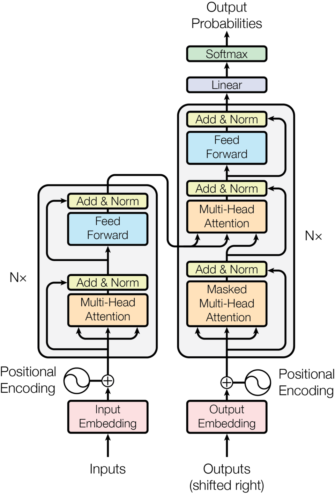
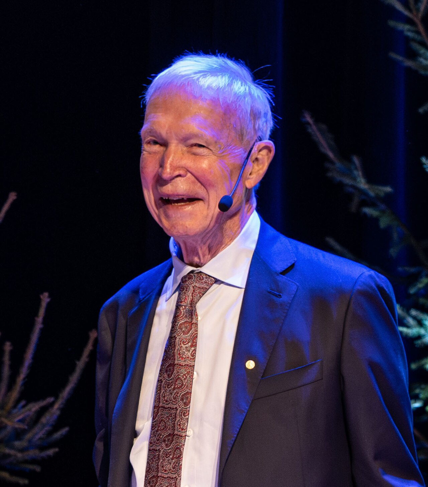
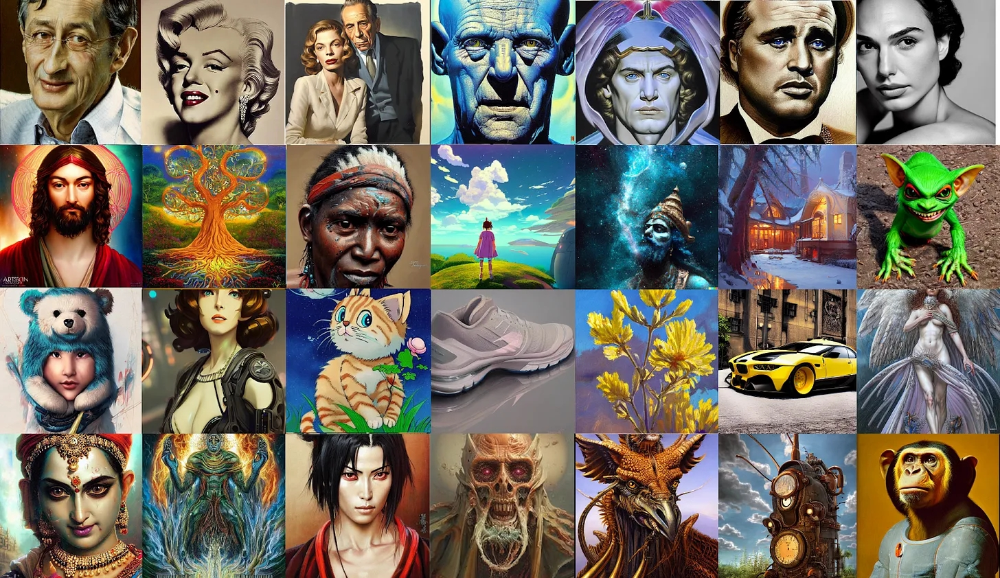

AI in Plain Terms
What "AI" Actually Means, and Why It Matters
The Melon Benchmark
Agenda
- What Is AI, Really?
- Where This All Came From
- How Today's AI Actually Works
- AI Accomplishments
- Can AI Keep Getting Better?
- The Real Dangers of AI
2.
What Is AI, Really?
Before We Start...
What is AI?
(Just answer off the top of your head — there's no wrong answer yet.)
Three Terms, Three Scopes
- Artificial Intelligence (AI): the broad goal — getting a machine to perform tasks that normally require human intelligence.
- Machine Learning (ML): one way to get there — instead of hand-coding every rule, the system learns patterns from data.
- Deep Learning (DL): one way to do ML, using neural networks with many layers. Today's most powerful, most popular approach.
Putting It Together
Each ring sits fully inside the one before it — DL is a subset of ML, which is a subset of AI.
Machine Learning in Practice
The simplest possible example: linear regression — fit a line through data, then use it to predict.
Dots are past examples; the red line is what the model learned. New input → read off the line → prediction.
Deep Learning — Neural Networks
Many simple units ("neurons"), arranged in layers, each layer feeding the next.
"Deep" just means many hidden layers stacked between input and output.
Transformers — The Real Architecture
From the original 2017 "Attention Is All You Need" paper — the architecture behind ChatGPT and most modern language models.

3.
Where This All Came From
A Physics Prize... for AI?
2024 Nobel Prize in Physics — awarded to John Hopfield and Geoffrey Hinton.
"for foundational discoveries and inventions that enable machine learning with artificial neural networks"
First time the physics prize recognized this kind of work.
Two Physicists, Two Key Ideas

Hopfield network

Boltzmann machine / RBM
Spin Glass Theory, Simply
- Originally a physics idea about magnetic materials: tiny magnets ("spins") linked to their neighbors, some pulling together, some pushing apart.
- There's no single tidy order — the system settles into one of many stable, low-energy configurations depending on where it started.
What Spin Glass Looks Like
Each arrow is a tiny magnet ("spin") that can point up or down. Neighbors pull some pairs into agreement and push others apart — the grid settles into one of many possible stable arrangements. Hopfield's insight: treat each arrangement as a stored memory.
RBM, Simply
- Boltzmann machine: like a Hopfield network, but with randomness added, and two kinds of units — visible (input) and hidden (learned features).
- "Restricted" = hidden units only connect to visible units, never to each other. That one rule makes it practical to train.
Same Family, Different Wiring
Why It Mattered
Finds hidden patterns in data on its own — e.g. learning "edges" or "shapes" in images without being told. Hinton stacked RBMs to pretrain deep networks in 2006 — a turning point that helped ignite the deep learning boom.
4.
How Today's AI Actually Works
Quick Guess
How do you think these models actually work?
It's Probability, All the Way Down
- Trained on enormous amounts of text.
- At the core, it's predicting "what word comes next" — over and over.
How Image Generation Works
Take Stable Diffusion as an example: the model starts from random (Gaussian) noise, then conditions on your prompt to gradually remove that noise, step by step, until an image forms.
The prompt steers every step of the denoising process, not just the final result.
5.
AI Accomplishments
Chatbots / Text AI
Mainly built on the Transformer architecture.


Image & Video Generators
Mainly built on Diffusion models, often paired with ViT (Vision Transformer) components.

Earlier approaches like GANs and VAEs paved the way, but diffusion has largely taken over — not going deeper on those here.
Other AI Achievements
- Medicine: AI-assisted drug discovery and faster, more accurate diagnostic reading of scans.
- Accessibility: real-time captioning, screen readers, and tools that help people with disabilities communicate and navigate the world.
- 2024 Nobel Prize in Chemistry: David Baker ("for computational protein design"), and Demis Hassabis & John Jumper ("for protein structure prediction" — AlphaFold2).
6.
Can AI Keep Getting Better?
Discuss
Do you think AI just keeps getting smarter from here?
Probably — But Not Obviously Right Now
- Architecture limits: today's designs may have ceilings we haven't hit yet.
- Possible plateau: gains from just "making it bigger" may be slowing.
- Running low on data: fresh, high-quality text to train on isn't infinite.
7.
The Real Dangers of AI
Discuss
What worries you about AI, if anything?
What's Actually Happening Right Now
- Deepfakes — realistic fake video/audio of real people.
- "AI-washing" — companies overstating AI use for hype or valuation.
- Misinformation at scale — generated content flooding feeds.
- False plagiarism flags — AI-detection tools disproportionately flagging non-native English speakers' writing as "AI-generated."
Thank You
Questions so far? We'll dig into a few more — including "can AI destroy us?" and how to prompt AI well — in the Q&A section.
8.
Your Questions
Does Using AI Deplete Water Resources?
Asked (in Vietnamese): "có đúng là dùng AI nhiều sẽ làm cạn kiệt tài nguyên nước hay không?"
Yes — for a few concrete reasons:
- Direct cooling: data centers use water-based cooling for hardware and GPUs, similar to air conditioning.
- Electricity demand: even without water cooling, AI's power draw is enormous — in places that lean on non-renewable sources for that electricity (like Vietnam), this compounds the resource cost.
- Water pollution: general waste and runoff from data center operations themselves.
Can AI Replace Therapists?
It can offer tips — but it shouldn't be your sole source of mental health support.
- AI tends to be biased toward agreeing with you — it can miss or downplay warning signs because it's optimized to comfort rather than challenge you. (RLHF — reinforcement learning from human feedback — is a big reason why.)
- Relying on it here is risky: its information can simply be wrong, and getting it wrong on something this personal can cause real harm.
How to Use AI Properly
- Don't use it for misinformation, scams, or other bad-faith purposes.
- Prompt with as much detail as possible — AI is capable, but it needs specifics to give you its best.
- Avoid sharing personal info, sensitive data, or sensitive guidance requests (ties back to the therapy question).
- AI is not your friend — don't treat it like one.
- Like any tool, it cuts both ways: use it with caution.
Jobs People Wrongly Assume Are AI-Proof
- Screening and review-heavy jobs — e.g. first-pass research review, document/contract review.
- A few more to consider: first-draft translation and copywriting, junior-level coding and code review, diagnostic scan screening in medicine, first-tier customer support.